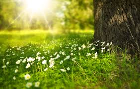

portraits
nature

Photographer portfolio sites showcase work, provide biographical information regarding the photographer,
often include a contact page, and are perfect for inspiration and creative influence.
Below are 25 portfolios with different styles and approaches.
Web designers often browse through portfolio websites of other designers for inspiration and ideas that can be used in their own work.
Photographers, like designers, need to display an attractive portfolio for their websites’ visitors,
and many photographers have excellent portfolio sites.